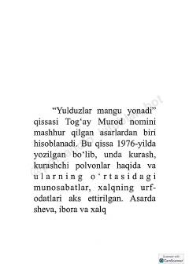

YMKurashchi polvonlar hayoti va xalqimizning milliy qadriyatlari aks etgan ta'sirli qissa.
Togʻay Murodning ushbu mashhur qissasi kurashchi polvonlar hayoti, ularning oʻzaro munosabatlari va xalqimizning boy urf-odatlari haqida hikoya qiladi. Asar oʻziga xos sheva va xalq maqollaridan mohirona foydalanilgan tili bilan ajralib turadi.